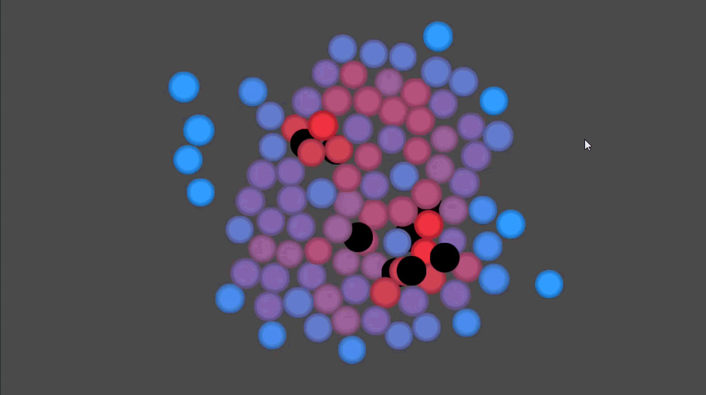

// 04 · Case Study
Moshpit
A 2D top-down arcade highscore game that turns the chaos of a festival mosh pit into physics-based, rhythm-driven gameplay — solo-designed and programmed in Godot 4.
- Team
- Solo
- Role
- Game Design & Programming
- Status
- In active development
- Tools
- Godot 4 (C#)
Overview
Moshpit is a 2D top-down arcade highscore game that turns the chaos of a festival mosh pit into physics-based gameplay, blending the kinetic, rhythm-driven feedback of Ape Out with the precision timing of Sekiro's parry system. Beneath the raw physicality, the design core is about collective energy and camaraderie rather than violence — sweat and momentum, not blood.
Design Challenge
Before any player interaction could work, the crowd itself had to feel alive. The current milestone is proving that hundreds of independent agents can move, push, and breathe like a real mosh pit — using a custom 2D social force simulation — before a single player mechanic is layered on top.
- Simulate hundreds of agents with believable, density-driven crowd behavior in real time
- Render the whole crowd in a single draw call via MultiMesh instancing, leaving performance headroom for gameplay systems later
- Sync a rhythm-driven wave mechanic to the music so the crowd's motion reads as musical, not random

My Contribution
As solo designer and programmer, I built the custom 2D social force crowd simulation in Godot 4 (C#) from scratch — agents that push, flow, and "breathe" through density-driven forces — and implemented the MultiMesh instancing pipeline that renders hundreds of agents in a single draw call. I also built the rhythm-synced wave mechanic that radiates through the crowd in time with the music.
Outcome & Learnings
The project is currently in an active physics-prototyping phase: the simulation above runs crowd-only, without a player in it yet. Getting hundreds of agents to move and react like a real, living mosh pit is the milestone that has to hold up before any player interaction is layered on top — introducing the player into the simulation is the next step.